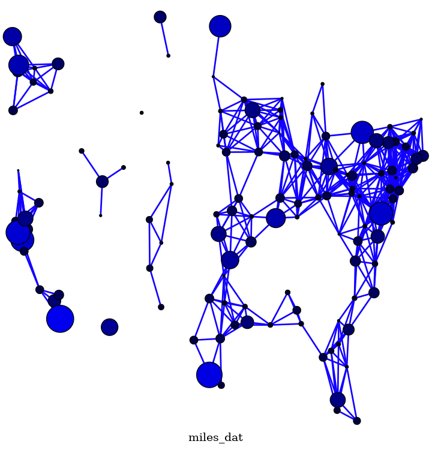

Note
Go to the end to download the full example code
Knuth Miles#
An example that shows how to add your own positions to nodes and have graphviz “neato” position the edges.
miles_graph() returns an undirected graph over the 128 US cities from the datafile miles_dat.txt.
This example is described in Section 1.1 in Knuth’s book [1] [2].
The data used in this example is copied from [2]. The filename and header have been modified to adhere to the request of the author to not corrupt the original source file content and name.
References.#
Loaded miles_dat.txt containing 128 cities.
Wrote miles.dot
Wrote miles.png
__author__ = """Aric Hagberg (aric.hagberg@gmail.com)"""
def miles_graph():
"""Return a graph from the data in miles_dat.txt.
Edges are made between cities that are less then 300 miles apart.
"""
import math
import re
import gzip
G = pgv.AGraph(name="miles_dat")
G.node_attr["shape"] = "circle"
G.node_attr["fixedsize"] = "true"
G.node_attr["fontsize"] = "8"
G.node_attr["style"] = "filled"
G.graph_attr["outputorder"] = "edgesfirst"
G.graph_attr["label"] = "miles_dat"
G.graph_attr["ratio"] = "1.0"
G.edge_attr["color"] = "#1100FF"
G.edge_attr["style"] = "setlinewidth(2)"
cities = []
for line in gzip.open("miles_dat.txt.gz", "rt"):
if line.startswith("*"): # skip comments
continue
numfind = re.compile(r"^\d+")
if numfind.match(line): # this line is distances
dist = line.split()
for d in dist:
if float(d) < 300: # connect if closer then 300 miles
G.add_edge(city, cities[i])
i = i + 1
else: # this line is a city, position, population
i = 1
(city, coordpop) = line.split("[")
cities.insert(0, city)
(coord, pop) = coordpop.split("]")
(y, x) = coord.split(",")
G.add_node(city)
n = G.get_node(city)
# assign positions, scale to be something reasonable in points
n.attr[
"pos"
] = f"{-(float(x) - 7000) / 10.0:f},{(float(y) - 2000) / 10.0:f}"
# assign node size, in sqrt of 1,000,000's of people
d = math.sqrt(float(pop) / 1000000.0)
n.attr["height"] = f"{d / 2}"
n.attr["width"] = f"{d / 2}"
# assign node color
n.attr["fillcolor"] = f"#0000{int(d * 256):2x}"
# empty labels
n.attr["label"] = " "
return G
if __name__ == "__main__":
import warnings
import pygraphviz as pgv
# ignore Graphviz warning messages
warnings.simplefilter("ignore", RuntimeWarning)
G = miles_graph()
print("Loaded miles_dat.txt containing 128 cities.")
G.write("miles.dot")
print("Wrote miles.dot")
G.draw("miles.png", prog="neato", args="-n2")
print("Wrote miles.png")
Total running time of the script: (0 minutes 0.089 seconds)